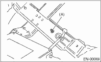
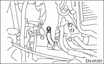

1. Airbag system wiring harness is routed near the ECM, main relay and fuel pump relay.
CAUTION:
• All airbag wiring harness and connectors are all colored yellow. Do not use the electrical test equipment on these circuits.
• Be careful not to damage the airbag system wiring harness when servicing the ECM, TCM, main relay and fuel pump relay.
2. Never connect the battery in reverse polarity. Fail to do so may destroy the ECM instantly, and the fuel injector and other parts will also be damaged.
3. Do not disconnect the battery terminals while the engine is running. A large counter electromotive force will be generated in the generator, and this voltage may damage electronic parts such as ECM etc.
4. Before disconnecting the connectors of each sensor and ECM, be sure to turn the ignition switch to OFF. Perform the Clear Memory Mode after connecting the connectors. 
5. In measuring the voltage or resistance of individual sensor or all electrical control modules, use a tapered pin with a diameter of less than 0.64 mm (0.025 in). Do not insert the pin 5 mm (0.20 in) or more into the part.
6. Take care not to allow water to get into the connectors when servicing or washing the vehicle in rainy weather. Even if the connectors are waterproof, take care not to allow water to get into them.
7. Use ECM mounting stud bolts at the body head grounding point when measuring voltage and resistance in the passenger compartment.

|
(A) |
Stud bolt |
8. Use the engine ground terminal or engine assembly for the grounding point to chassis when measuring the voltage and resistance in engine compartment.

9. Every MFI-related part is a precision part. Do not drop them.
10. Observe the following cautions when installing a radio in MFI equipped models.
CAUTION:
• The antenna must be kept as far apart as possible from control unit. (The ECM is located under the steering column, inside of instrument panel lower trim panel.)
• The antenna feeder must be placed as far apart as possible from the ECM and MFI harness.
• Carefully adjust the antenna for correct matching.
• When mounting a large power type radio, pay special attention to the three items mentioned above.
• Incorrect installation of the radio may affect the operation of ECM.
11. Before disconnecting the fuel hoses, disconnect the fuel pump connector and crank the engine for 5 seconds or more to release the pressure of fuel system. If engine starts during this operation, run it until it stops.
12. When performing the diagnosis, start with simple and easy operations and proceed to more complicated and harder operations. The most important in performing the diagnosis is to closely find the problems that users insist on and to discern these three problems.
13. For the model with ABS, the ABS warning light may illuminate when performing driving test with jacked-up or lifted-up condition, but this is not a system malfunction. The reason for this is the speed difference between the front and rear wheels. After diagnosis of engine control system, perform the ABS memory clear procedure of self-diagnosis function.